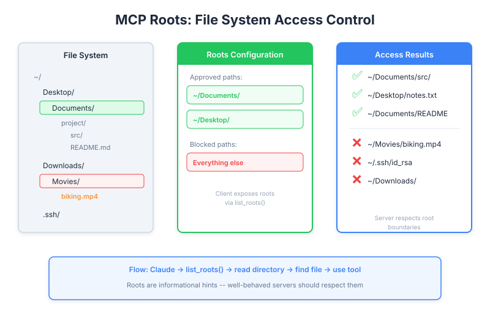

| Item | Detail |
|---|---|
| Exam Domain | D2 — Tool Design & MCP Integration (18%) |
| Task Statements | 2.2 (MCP security model), 2.3 (MCP server capabilities) |
| Source | model-context-protocol-advanced-topics / 02-roots-and-messages / Lesson 07 |
Roots grant MCP servers access to specific files and directories, solving the file path discovery problem while providing a security boundary that limits what the server can access.

Without roots, an MCP server that works with files faces a fundamental problem: how does it know where to look?
/Users/reed/Documents/project/src/main.pyRoots solve this by giving the server a list of approved starting points.
The flow is straightforward:
Client Server
| |
|-- list_roots() --------->| (server asks: "what can I access?")
|<-- [Root("/projects"), |
| Root("/data")] -----| (client answers: "these directories")
| |
| |-- read_dir("/projects") -->
| |-- find target file ------->
| |-- use tool on file ------->
list_roots() to discover approved directories@mcp.tool()
async def find_and_read(ctx: Context, filename: str) -> str:
# Step 1: Get the approved roots
roots = await ctx.session.list_roots()
# Step 2: Search within roots
for root in roots:
root_path = Path(root.uri.replace("file://", ""))
for path in root_path.rglob(filename):
if path.is_file():
return path.read_text()
return f"File '{filename}' not found in any root"
Key details:
- Roots are returned as URIs (e.g., file:///Users/reed/project)
- The server must convert URIs to filesystem paths
- rglob() searches recursively within each root
The client defines which directories the server may access:
from mcp import Root
roots = [
Root(uri="file:///Users/reed/projects/my-app", name="My App"),
Root(uri="file:///Users/reed/data", name="Data Directory"),
]
# Roots are provided during client session setup
async with ClientSession(read, write) as session:
await session.initialize()
# Client exposes roots via list_roots handler
The client has full control over what is exposed — this is a security feature.
This is the most critical point for the exam:
The MCP SDK does not automatically enforce root boundaries. The server receives the root list, but nothing prevents it from accessing files outside those roots. You must implement enforcement yourself:
def is_path_allowed(file_path: str, roots: list[Root]) -> bool:
"""Check if a path falls within an approved root."""
target = Path(file_path).resolve()
for root in roots:
root_path = Path(root.uri.replace("file://", "")).resolve()
if target.is_relative_to(root_path):
return True
return False
@mcp.tool()
async def safe_read(ctx: Context, file_path: str) -> str:
roots = await ctx.session.list_roots()
if not is_path_allowed(file_path, roots):
raise PermissionError(f"Access denied: {file_path} is outside approved roots")
return Path(file_path).read_text()
Always use .resolve() to prevent path traversal attacks (e.g., ../../etc/passwd).
Key Insight
Roots are a convention, not a sandbox. The SDK provides the mechanism to discover approved directories, but the server developer must implement the actual access control. This is a frequent exam topic — the answer is always "implementis_path_allowed()yourself."
| Benefit | Explanation |
|---|---|
| User-friendly | Users say "look in my project" instead of typing full paths |
| Focused search | Server searches specific directories, not the entire filesystem |
| Security boundary | Limits what the server should access (when enforced) |
| Flexibility | Clients can add/remove roots dynamically |
| Multi-project support | Multiple roots can point to different projects |
When implementing is_path_allowed(), handle these attack vectors:
# Dangerous inputs to guard against:
"../../../etc/passwd" # Relative path escape
"/Users/reed/projects/../.ssh" # Mid-path traversal
"./symlink_to_root" # Symlink escape
# Defense: always resolve to absolute path first
target = Path(file_path).resolve() # Resolves symlinks and ..
list_roots() is a fundamental capability| Front | Back |
|---|---|
| What problem do MCP roots solve? | File path discovery — giving servers approved starting directories instead of searching the entire filesystem |
| Does the MCP SDK automatically enforce root boundaries? | No — the server receives the root list but must implement is_path_allowed() enforcement manually |
| What method does a server call to discover approved directories? | ctx.session.list_roots() |
| What format are roots returned in? | URIs (e.g., file:///Users/reed/project) |
Why must you call .resolve() when checking paths against roots? |
To prevent path traversal attacks using .. or symlinks |
| Who controls which roots are exposed? | The client — it defines the root list during session setup |
| Can roots be changed dynamically? | Yes — clients can add or remove roots during the session |
| What is the security philosophy behind roots? | Convention, not sandbox — the mechanism exists but enforcement is the developer's responsibility |